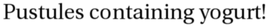
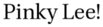
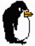
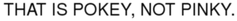
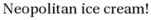

interpret_script.pl runs:
Script specification
panels 6 panel 1 Proxybot appears Proxybot says Undercoooked salmon fabric! panel 2 Proxybot says Pustules containing yogurt! panel 3 Proxybot says Pinky Lee! panel 5 font size=13 font="couri" pokey appears pokey says THAT IS POKEY, NOT PINKY. panel 6 font size=12 pokey says NOW TO MOCK ITALIANS! font clear font size=11 Proxybot says Neopolitan ice cream!
Interpretation follows:
panels 6
Panel parameters and layout (currently ignored)
panel 1
Panel - (parameters currently ignored)
Proxybot appears
Character Proxybot appears on scene
Proxybot says Undercoooked salmon fabric!
Character "Proxybot", already on panel, speaks!
Speaker says: "Undercoooked salmon fabric!"
panel 2
Panel - (parameters currently ignored)
Proxybot says Pustules containing yogurt!
Speech implies presence: speaker is "Proxybot".
Speaker says: "Pustules containing yogurt!"
panel 3
Panel - (parameters currently ignored)
Proxybot says Pinky Lee!
Speech implies presence: speaker is "Proxybot".
Speaker says: "Pinky Lee!"
panel 5
Panel - (parameters currently ignored)
font size=13 font="couri"
Font size is now 13.
Font is now font="couri"
pokey appears
Character pokey appears on scene
pokey says THAT IS POKEY, NOT PINKY.
Character "pokey", already on panel, speaks!
Speaker says: "THAT IS POKEY, NOT PINKY."
panel 6
Panel - (parameters currently ignored)
font size=12
Font size is now 12.
Font is still font="couri"
pokey says NOW TO MOCK ITALIANS!
Speech implies presence: speaker is "pokey".
Speaker says: "NOW TO MOCK ITALIANS!"
font clear
Font is now default.
font size=11
Font size is now 11.
Font is still default
Proxybot says Neopolitan ice cream!
Speech implies presence: speaker is "Proxybot".
Speaker says: "Neopolitan ice cream! "
I have no idea what this means.
Resulting XML definition:
<cartoon rowformat="1" width="700" panel-h="150" character-base-url="http://www.vivtek.com/toonbots/characters/"> <panel> <character name="Proxybot"/> <dialog who="Proxybot">Undercoooked salmon fabric!</dialog> </panel> <panel> <character name="Proxybot"/> <dialog who="Proxybot">Pustules containing yogurt!</dialog> </panel> <panel> <character name="Proxybot"/> <dialog who="Proxybot">Pinky Lee!</dialog> </panel> <panel> <character name="pokey"/> <dialog who="pokey" font="font="couri"" font-size="13">THAT IS POKEY, NOT PINKY.</dialog> </panel> <panel> <character name="pokey"/> <dialog who="pokey" font="font="couri"" font-size="12">NOW TO MOCK ITALIANS!</dialog> <character name="Proxybot"/> <dialog who="Proxybot" font-size="11">Neopolitan ice cream! </dialog> </panel> </cartoon>
instantiate.pl runs, but doesn't really do anything yet.
build_panel_make.pl runs.
Scene default:
<scene id="default" panels="1-2-3-4-5"> <frame tag="default-1" id="1" panels="1"> <character name="Proxybot" tag="default-1"/> </frame> <frame tag="default-2" id="2" panels="2"> <character name="Proxybot" tag="default-1"/> <character name="Proxybot" tag="default-2"/> </frame> <frame tag="default-3" id="3" panels="3"> <character name="Proxybot" tag="default-1"/> <character name="Proxybot" tag="default-2"/> <character name="Proxybot" tag="default-3"/> </frame> <frame tag="default-4" id="4" panels="4"> <character name="Proxybot" tag="default-1"/> <character name="Proxybot" tag="default-2"/> <character name="Proxybot" tag="default-3"/> <character name="pokey" tag="default-4"/> </frame> <frame tag="default-5" id="5" panels="5"> <character name="Proxybot" tag="default-1"/> <character name="Proxybot" tag="default-2"/> <character name="Proxybot" tag="default-3"/> <character name="pokey" tag="default-4"/> <character name="pokey" tag="default-5"/> <character name="Proxybot" tag="default-5"/> </frame> </scene>
Panel Makefile is as follows:
# Panel Makefile generated Tue Sep 16 10:53:32 PDT 2008 by Toon-o-Matic t2 # Contains no serviceable parts. Batteries not included. # Void in NH, VT, and U.S. Minor Outlying Islands. all: panel-1.svg panel-2.svg panel-3.svg panel-4.svg panel-5.svg panel-1.svg: character-Proxybot-default-1-1.svg dialog-1-1.svg perl build_panel_g.pl panel-1.xml 1 1 > panel-1-g.svg perl merge_svg.pl "panel 1" panel-1-g.svg character-Proxybot-default-1-1.svg dialog-1-1.svg > panel-1.svg placement-panel-1.xml: draw-character-Proxybot-default-1.xml perl place_characters.pl "panel 1" 698 150 draw-character-Proxybot-default-1.xml > placement-panel-1.xml panel-2.svg: character-Proxybot-default-2-2.svg dialog-2-2.svg perl build_panel_g.pl panel-2.xml 1 157 > panel-2-g.svg perl merge_svg.pl "panel 2" panel-2-g.svg character-Proxybot-default-2-2.svg dialog-2-2.svg > panel-2.svg placement-panel-2.xml: draw-character-Proxybot-default-2.xml perl place_characters.pl "panel 2" 698 150 draw-character-Proxybot-default-2.xml > placement-panel-2.xml panel-3.svg: character-Proxybot-default-3-3.svg dialog-3-3.svg perl build_panel_g.pl panel-3.xml 1 314 > panel-3-g.svg perl merge_svg.pl "panel 3" panel-3-g.svg character-Proxybot-default-3-3.svg dialog-3-3.svg > panel-3.svg placement-panel-3.xml: draw-character-Proxybot-default-3.xml perl place_characters.pl "panel 3" 698 150 draw-character-Proxybot-default-3.xml > placement-panel-3.xml panel-4.svg: character-pokey-default-4-4.svg dialog-4-4.svg character-Proxybot-default-4-4.svg perl build_panel_g.pl panel-4.xml 1 471 > panel-4-g.svg perl merge_svg.pl "panel 4" panel-4-g.svg character-pokey-default-4-4.svg dialog-4-4.svg character-Proxybot-default-4-4.svg > panel-4.svg placement-panel-4.xml: draw-character-pokey-default-4.xml draw-character-Proxybot-default-1.xml perl place_characters.pl "panel 4" 698 150 draw-character-pokey-default-4.xml draw-character-Proxybot-default-1.xml > placement-panel-4.xml panel-5.svg: character-pokey-default-5-5.svg dialog-5-5.svg character-Proxybot-default-5-5.svg dialog-5-6.svg perl build_panel_g.pl panel-5.xml 1 628 > panel-5-g.svg perl merge_svg.pl "panel 5" panel-5-g.svg character-pokey-default-5-5.svg dialog-5-5.svg character-Proxybot-default-5-5.svg dialog-5-6.svg > panel-5.svg placement-panel-5.xml: draw-character-pokey-default-5.xml draw-character-Proxybot-default-5.xml perl place_characters.pl "panel 5" 698 150 draw-character-pokey-default-5.xml draw-character-Proxybot-default-5.xml > placement-panel-5.xml draw-character-Proxybot-default-2.xml: character-Proxybot-default-2.xml perl build_character.pl this 698 150 character-Proxybot-default-2.xml > draw-character-Proxybot-default-2.xml character-Proxybot-default-2-2.svg: draw-character-Proxybot-default-2.xml placement-panel-2.xml perl draw.pl draw-character-Proxybot-default-2.xml 698 150 placement-panel-2.xml > character-Proxybot-default-2-2.svg draw-character-Proxybot-default-5.xml: character-Proxybot-default-5.xml perl build_character.pl this 698 150 character-Proxybot-default-5.xml > draw-character-Proxybot-default-5.xml character-Proxybot-default-5-5.svg: draw-character-Proxybot-default-5.xml placement-panel-5.xml perl draw.pl draw-character-Proxybot-default-5.xml 698 150 placement-panel-5.xml > character-Proxybot-default-5-5.svg dialog-3-3.info: dialog-3-3.xml character-Proxybot-default-3-3.svg perl render_text.pl dialog-3-3.xml dialog-3-3.png identify -format '<graphic size="%b" height="%h" width="%w" geometry="%g" file="%f"/>' dialog-3-3.png > dialog-3-3.info dialog-3-3.svg: dialog-3-3.info perl draw_caption.pl dialog-3-3.xml dialog-3-3.info 698 150 0 dialog-3-3.png > dialog-3-3.svg dialog-1-1.info: dialog-1-1.xml character-Proxybot-default-1-1.svg perl render_text.pl dialog-1-1.xml dialog-1-1.png identify -format '<graphic size="%b" height="%h" width="%w" geometry="%g" file="%f"/>' dialog-1-1.png > dialog-1-1.info dialog-1-1.svg: dialog-1-1.info perl draw_caption.pl dialog-1-1.xml dialog-1-1.info 698 150 0 dialog-1-1.png > dialog-1-1.svg dialog-5-6.info: dialog-5-6.xml character-Proxybot-default-5-5.svg perl render_text.pl dialog-5-6.xml dialog-5-6.png identify -format '<graphic size="%b" height="%h" width="%w" geometry="%g" file="%f"/>' dialog-5-6.png > dialog-5-6.info dialog-5-6.svg: dialog-5-6.info perl draw_caption.pl dialog-5-6.xml dialog-5-6.info 698 150 0 dialog-5-6.png > dialog-5-6.svg draw-character-pokey-default-4.xml: character-pokey-default-4.xml perl build_character.pl this 698 150 character-pokey-default-4.xml > draw-character-pokey-default-4.xml character-pokey-default-4-4.svg: draw-character-pokey-default-4.xml placement-panel-4.xml perl draw.pl draw-character-pokey-default-4.xml 698 150 placement-panel-4.xml > character-pokey-default-4-4.svg dialog-2-2.info: dialog-2-2.xml character-Proxybot-default-2-2.svg perl render_text.pl dialog-2-2.xml dialog-2-2.png identify -format '<graphic size="%b" height="%h" width="%w" geometry="%g" file="%f"/>' dialog-2-2.png > dialog-2-2.info dialog-2-2.svg: dialog-2-2.info perl draw_caption.pl dialog-2-2.xml dialog-2-2.info 698 150 0 dialog-2-2.png > dialog-2-2.svg draw-character-Proxybot-default-1.xml: character-Proxybot-default-1.xml perl build_character.pl this 698 150 character-Proxybot-default-1.xml > draw-character-Proxybot-default-1.xml character-Proxybot-default-1-1.svg: draw-character-Proxybot-default-1.xml placement-panel-1.xml perl draw.pl draw-character-Proxybot-default-1.xml 698 150 placement-panel-1.xml > character-Proxybot-default-1-1.svg dialog-5-5.info: dialog-5-5.xml character-pokey-default-5-5.svg perl render_text.pl dialog-5-5.xml dialog-5-5.png identify -format '<graphic size="%b" height="%h" width="%w" geometry="%g" file="%f"/>' dialog-5-5.png > dialog-5-5.info dialog-5-5.svg: dialog-5-5.info perl draw_caption.pl dialog-5-5.xml dialog-5-5.info 698 150 0 dialog-5-5.png > dialog-5-5.svg draw-character-pokey-default-5.xml: character-pokey-default-5.xml perl build_character.pl this 698 150 character-pokey-default-5.xml > draw-character-pokey-default-5.xml character-pokey-default-5-5.svg: draw-character-pokey-default-5.xml placement-panel-5.xml perl draw.pl draw-character-pokey-default-5.xml 698 150 placement-panel-5.xml > character-pokey-default-5-5.svg character-Proxybot-default-4-4.svg: draw-character-Proxybot-default-1.xml placement-panel-4.xml perl draw.pl draw-character-Proxybot-default-1.xml 698 150 placement-panel-4.xml > character-Proxybot-default-4-4.svg dialog-4-4.info: dialog-4-4.xml character-pokey-default-4-4.svg perl render_text.pl dialog-4-4.xml dialog-4-4.png identify -format '<graphic size="%b" height="%h" width="%w" geometry="%g" file="%f"/>' dialog-4-4.png > dialog-4-4.info dialog-4-4.svg: dialog-4-4.info perl draw_caption.pl dialog-4-4.xml dialog-4-4.info 698 150 0 dialog-4-4.png > dialog-4-4.svg draw-character-Proxybot-default-3.xml: character-Proxybot-default-3.xml perl build_character.pl this 698 150 character-Proxybot-default-3.xml > draw-character-Proxybot-default-3.xml character-Proxybot-default-3-3.svg: draw-character-Proxybot-default-3.xml placement-panel-3.xml perl draw.pl draw-character-Proxybot-default-3.xml 698 150 placement-panel-3.xml > character-Proxybot-default-3-3.svgbuild_character.pl runs on character-Proxybot-default-1.xml:
<character name="Proxybot" tag="default-1"/>Retrieving character definition for Proxybot; URL is http://www.vivtek.com/toonbots/characters/Proxybot.xml
Retrieval fails, unfortunately. We'll go with the default character.
Final character definition:
<rect rel-w="75" show-box="yes" rel-h="50"/>
Built character:
<character name="Proxybot" tag="default-1" rel-h="50" rel-w="75" show-box="yes" height="75" width="56.25"/>
place_characters.pl places characters for panel 1:
<placement> <character name="Proxybot" x="320.875" y="52.5"/> </placement>
draw.pl runs on draw-character-Proxybot-default-1.xml:
SVG built:
<g x="320.875" y="52.5" w="56.25" h="75"> <rect x="320.875" y="52.5" width="56.25" height="75" style="stroke:black; stroke-width:1; fill:none"/> </g>
render_text.pl renders "dialog-1-1.xml":
<dialog who="Proxybot" ref-who="character-Proxybot-default-1-1.svg">Undercoooked salmon fabric!</dialog>
draw_caption.pl runs:
Graphics info:
<graphic width="292" file="dialog-1-1.png" geometry="2500x320+21+5" height="22" size="18430"/>
<g> <polyline style="stroke:black; stroke-width:1; fill:white" points="377.125,26.5 689.125,26.5 689.125,52.5 543.125,52.5 382.125,90 523.125,52.5 377.125,52.5 377.125,26.5"/> <image x="10" y="2" width="292" height="22" xlink:href="dialog-1-1.png" transform="translate(377.125,26.5)"/> </g>
build_panel_g.pl runs, producing:
<g transform="translate(1,1)"/>
merge_svg.pl runs to produce panel 1:
<g transform="translate(1,1)"><g w="56.25" y="52.5" h="75" x="320.875"> <rect width="56.25" y="52.5" style="stroke:black; stroke-width:1; fill:none" x="320.875" height="75"/> </g> <g> <polyline points="377.125,26.5 689.125,26.5 689.125,52.5 543.125,52.5 382.125,90 523.125,52.5 377.125,52.5 377.125,26.5" style="stroke:black; stroke-width:1; fill:white"/> <image width="292" y="2" transform="translate(377.125,26.5)" xlink:href="dialog-1-1.png" x="10" height="22"/> </g> </g>
build_character.pl runs on character-Proxybot-default-2.xml:
<character name="Proxybot" tag="default-2"/>
Built character:
<character name="Proxybot" tag="default-2" rel-h="50" rel-w="75" show-box="yes" height="75" width="56.25"/>
place_characters.pl places characters for panel 2:
<placement> <character name="Proxybot" x="320.875" y="52.5"/> </placement>
draw.pl runs on draw-character-Proxybot-default-2.xml:
SVG built:
<g x="320.875" y="52.5" w="56.25" h="75"> <rect x="320.875" y="52.5" width="56.25" height="75" style="stroke:black; stroke-width:1; fill:none"/> </g>
render_text.pl renders "dialog-2-2.xml":
<dialog who="Proxybot" ref-who="character-Proxybot-default-2-2.svg">Pustules containing yogurt!</dialog>
draw_caption.pl runs:
Graphics info:
<graphic width="268" file="dialog-2-2.png" geometry="2500x320+21+5" height="27" size="17844"/>
<g> <polyline style="stroke:black; stroke-width:1; fill:white" points="377.125,21.5 665.125,21.5 665.125,52.5 531.125,52.5 382.125,90 511.125,52.5 377.125,52.5 377.125,21.5"/> <image x="10" y="2" width="268" height="27" xlink:href="dialog-2-2.png" transform="translate(377.125,21.5)"/> </g>
build_panel_g.pl runs, producing:
<g transform="translate(1,157)"/>
merge_svg.pl runs to produce panel 2:
<g transform="translate(1,157)"><g w="56.25" y="52.5" h="75" x="320.875"> <rect width="56.25" y="52.5" style="stroke:black; stroke-width:1; fill:none" x="320.875" height="75"/> </g> <g> <polyline points="377.125,21.5 665.125,21.5 665.125,52.5 531.125,52.5 382.125,90 511.125,52.5 377.125,52.5 377.125,21.5" style="stroke:black; stroke-width:1; fill:white"/> <image width="268" y="2" transform="translate(377.125,21.5)" xlink:href="dialog-2-2.png" x="10" height="27"/> </g> </g>
build_character.pl runs on character-Proxybot-default-3.xml:
<character name="Proxybot" tag="default-3"/>
Built character:
<character name="Proxybot" tag="default-3" rel-h="50" rel-w="75" show-box="yes" height="75" width="56.25"/>
place_characters.pl places characters for panel 3:
<placement> <character name="Proxybot" x="320.875" y="52.5"/> </placement>
draw.pl runs on draw-character-Proxybot-default-3.xml:
SVG built:
<g x="320.875" y="52.5" w="56.25" h="75"> <rect x="320.875" y="52.5" width="56.25" height="75" style="stroke:black; stroke-width:1; fill:none"/> </g>
render_text.pl renders "dialog-3-3.xml":
<dialog who="Proxybot" ref-who="character-Proxybot-default-3-3.svg">Pinky Lee!</dialog>
draw_caption.pl runs:
Graphics info:
<graphic width="103" file="dialog-3-3.png" geometry="2500x320+21+5" height="27" size="7788"/>
<g> <polyline style="stroke:black; stroke-width:1; fill:white" points="377.125,21.5 500.125,21.5 500.125,52.5 448.625,52.5 382.125,90 428.625,52.5 377.125,52.5 377.125,21.5"/> <image x="10" y="2" width="103" height="27" xlink:href="dialog-3-3.png" transform="translate(377.125,21.5)"/> </g>
build_panel_g.pl runs, producing:
<g transform="translate(1,314)"/>
merge_svg.pl runs to produce panel 3:
<g transform="translate(1,314)"><g w="56.25" y="52.5" h="75" x="320.875"> <rect width="56.25" y="52.5" style="stroke:black; stroke-width:1; fill:none" x="320.875" height="75"/> </g> <g> <polyline points="377.125,21.5 500.125,21.5 500.125,52.5 448.625,52.5 382.125,90 428.625,52.5 377.125,52.5 377.125,21.5" style="stroke:black; stroke-width:1; fill:white"/> <image width="103" y="2" transform="translate(377.125,21.5)" xlink:href="dialog-3-3.png" x="10" height="27"/> </g> </g>
build_character.pl runs on character-pokey-default-4.xml:
<character name="pokey" tag="default-4"/>Retrieving character definition for pokey; URL is http://www.vivtek.com/toonbots/characters/pokey.xml
Retrieving image from http://www.vivtek.com/toonbots/characters/pokey.gif

Final character definition:
<character name="pokey" label="Pokey the Penguin" rel-h="50"> <draw face="right" file="image-pokey-1.gif" type="image"/> </character>
Built character:
<character name="pokey" tag="default-4" rel-h="50" rel-w="" height="75" width="58.0188679245283"> <draw face="right" file="image-pokey-1.gif" type="image" rel-h="100" rel-w="100" height="75" rel-x="0" rel-y="0" w="41" h="53" width="58.0188679245283"/> </character>
place_characters.pl places characters for panel 4:
<placement> <character name="pokey" x="203.657232704403" y="52.5"/> <character name="Proxybot" x="437.208333333333" y="52.5"/> </placement>
draw.pl runs on draw-character-pokey-default-4.xml:
SVG built:
<g x="203.657232704403" y="52.5" w="58.0188679245283" h="75"> <image x="203.657232704403" y="52.5" width="58.0188679245283" height="75" xlink:href="image-pokey-1.gif"/> </g>
render_text.pl renders "dialog-4-4.xml":
<dialog who="pokey" ref-who="character-pokey-default-4-4.svg" font="font="couri"" font-size="13">THAT IS POKEY, NOT PINKY.</dialog>
draw_caption.pl runs:
Graphics info:
<graphic width="237" file="dialog-4-4.png" geometry="2500x320+16+4" height="21" size="13924"/>
<g> <polyline style="stroke:black; stroke-width:1; fill:white" points="261.676100628931,27.5 518.676100628931,27.5 518.676100628931,52.5 400.176100628931,52.5 266.676100628931,90 380.176100628931,52.5 261.676100628931,52.5 261.676100628931,27.5"/> <image x="10" y="2" width="237" height="21" xlink:href="dialog-4-4.png" transform="translate(261.676100628931,27.5)"/> </g>
draw.pl runs on draw-character-Proxybot-default-1.xml:
SVG built:
<g x="437.208333333333" y="52.5" w="56.25" h="75"> <rect x="437.208333333333" y="52.5" width="56.25" height="75" style="stroke:black; stroke-width:1; fill:none"/> </g>
build_panel_g.pl runs, producing:
<g transform="translate(1,471)"/>
merge_svg.pl runs to produce panel 4:
<g transform="translate(1,471)"><g w="58.0188679245283" y="52.5" h="75" x="203.657232704403"> <image width="58.0188679245283" y="52.5" xlink:href="image-pokey-1.gif" x="203.657232704403" height="75"/> </g> <g> <polyline points="261.676100628931,27.5 518.676100628931,27.5 518.676100628931,52.5 400.176100628931,52.5 266.676100628931,90 380.176100628931,52.5 261.676100628931,52.5 261.676100628931,27.5" style="stroke:black; stroke-width:1; fill:white"/> <image width="237" y="2" transform="translate(261.676100628931,27.5)" xlink:href="dialog-4-4.png" x="10" height="21"/> </g> <g w="56.25" y="52.5" h="75" x="437.208333333333"> <rect width="56.25" y="52.5" style="stroke:black; stroke-width:1; fill:none" x="437.208333333333" height="75"/> </g> </g>
build_character.pl runs on character-pokey-default-5.xml:
<character name="pokey" tag="default-5"/>
Built character:
<character name="pokey" tag="default-5" rel-h="50" rel-w="" height="75" width="58.0188679245283"> <draw face="right" file="image-pokey-1.gif" type="image" rel-h="100" rel-w="100" height="75" rel-x="0" rel-y="0" w="41" h="53" width="58.0188679245283"/> </character>
build_character.pl runs on character-Proxybot-default-5.xml:
<character name="Proxybot" tag="default-5"/>
Built character:
<character name="Proxybot" tag="default-5" rel-h="50" rel-w="75" show-box="yes" height="75" width="56.25"/>
place_characters.pl places characters for panel 5:
<placement> <character name="pokey" x="203.657232704403" y="52.5"/> <character name="Proxybot" x="437.208333333333" y="52.5"/> </placement>
draw.pl runs on draw-character-pokey-default-5.xml:
SVG built:
<g x="203.657232704403" y="52.5" w="58.0188679245283" h="75"> <image x="203.657232704403" y="52.5" width="58.0188679245283" height="75" xlink:href="image-pokey-1.gif"/> </g>
render_text.pl renders "dialog-5-5.xml":
<dialog who="pokey" ref-who="character-pokey-default-5-5.svg" font="font="couri"" font-size="12">NOW TO MOCK ITALIANS!</dialog>
draw_caption.pl runs:
Graphics info:
<graphic width="200" file="dialog-5-5.png" geometry="2500x320+16+3" height="18" size="12617"/>
<g> <polyline style="stroke:black; stroke-width:1; fill:white" points="261.676100628931,30.5 481.676100628931,30.5 481.676100628931,52.5 381.676100628931,52.5 266.676100628931,90 361.676100628931,52.5 261.676100628931,52.5 261.676100628931,30.5"/> <image x="10" y="2" width="200" height="18" xlink:href="dialog-5-5.png" transform="translate(261.676100628931,30.5)"/> </g>
draw.pl runs on draw-character-Proxybot-default-5.xml:
SVG built:
<g x="437.208333333333" y="52.5" w="56.25" h="75"> <rect x="437.208333333333" y="52.5" width="56.25" height="75" style="stroke:black; stroke-width:1; fill:none"/> </g>
render_text.pl renders "dialog-5-6.xml":
<dialog who="Proxybot" ref-who="character-Proxybot-default-5-5.svg" font-size="11">Neopolitan ice cream! </dialog>
draw_caption.pl runs:
Graphics info:
<graphic width="151" file="dialog-5-6.png" geometry="2500x320+14+3" height="20" size="8994"/>
<g> <polyline style="stroke:black; stroke-width:1; fill:white" points="493.458333333333,28.5 664.458333333333,28.5 664.458333333333,52.5 588.958333333333,52.5 498.458333333333,90 568.958333333333,52.5 493.458333333333,52.5 493.458333333333,28.5"/> <image x="10" y="2" width="151" height="20" xlink:href="dialog-5-6.png" transform="translate(493.458333333333,28.5)"/> </g>
build_panel_g.pl runs, producing:
<g transform="translate(1,628)"/>
merge_svg.pl runs to produce panel 5:
<g transform="translate(1,628)"><g w="58.0188679245283" y="52.5" h="75" x="203.657232704403"> <image width="58.0188679245283" y="52.5" xlink:href="image-pokey-1.gif" x="203.657232704403" height="75"/> </g> <g> <polyline points="261.676100628931,30.5 481.676100628931,30.5 481.676100628931,52.5 381.676100628931,52.5 266.676100628931,90 361.676100628931,52.5 261.676100628931,52.5 261.676100628931,30.5" style="stroke:black; stroke-width:1; fill:white"/> <image width="200" y="2" transform="translate(261.676100628931,30.5)" xlink:href="dialog-5-5.png" x="10" height="18"/> </g> <g w="56.25" y="52.5" h="75" x="437.208333333333"> <rect width="56.25" y="52.5" style="stroke:black; stroke-width:1; fill:none" x="437.208333333333" height="75"/> </g> <g> <polyline points="493.458333333333,28.5 664.458333333333,28.5 664.458333333333,52.5 588.958333333333,52.5 498.458333333333,90 568.958333333333,52.5 493.458333333333,52.5 493.458333333333,28.5" style="stroke:black; stroke-width:1; fill:white"/> <image width="151" y="2" transform="translate(493.458333333333,28.5)" xlink:href="dialog-5-6.png" x="10" height="20"/> </g> </g>
draw_panels.pl runs:
<svg height="780" width="702"> <rect height="780" width="700" style="fill: white"/> <polyline transform="" style="fill:none; stroke:black; stroke-width:1" arrow="" points="1,471 699,471 699,621 1,621 1,471"/> <polyline transform="" style="fill:none; stroke:black; stroke-width:1" arrow="" points="1,1 699,1 699,151 1,151 1,1"/> <polyline transform="" style="fill:none; stroke:black; stroke-width:1" arrow="" points="1,314 699,314 699,464 1,464 1,314"/> <polyline transform="" style="fill:none; stroke:black; stroke-width:1" arrow="" points="1,157 699,157 699,307 1,307 1,157"/> <polyline transform="" style="fill:none; stroke:black; stroke-width:1" arrow="" points="1,628 699,628 699,778 1,778 1,628"/> </svg>
merge_svg.pl runs to produce the final cartoon:
<svg width="702" height="780"> <rect width="700" style="fill: white" height="780"/> <polyline transform="" points="1,471 699,471 699,621 1,621 1,471" style="fill:none; stroke:black; stroke-width:1" arrow=""/> <polyline transform="" points="1,1 699,1 699,151 1,151 1,1" style="fill:none; stroke:black; stroke-width:1" arrow=""/> <polyline transform="" points="1,314 699,314 699,464 1,464 1,314" style="fill:none; stroke:black; stroke-width:1" arrow=""/> <polyline transform="" points="1,157 699,157 699,307 1,307 1,157" style="fill:none; stroke:black; stroke-width:1" arrow=""/> <polyline transform="" points="1,628 699,628 699,778 1,778 1,628" style="fill:none; stroke:black; stroke-width:1" arrow=""/> <g transform="translate(1,1)"/> <g transform="translate(1,1)"><g y="52.5" w="56.25" h="75" x="320.875"> <rect y="52.5" width="56.25" style="stroke:black; stroke-width:1; fill:none" x="320.875" height="75"/> </g> <g> <polyline style="stroke:black; stroke-width:1; fill:white" points="377.125,26.5 689.125,26.5 689.125,52.5 543.125,52.5 382.125,90 523.125,52.5 377.125,52.5 377.125,26.5"/> <image y="2" width="292" transform="translate(377.125,26.5)" xlink:href="dialog-1-1.png" x="10" height="22"/> </g> </g> <g transform="translate(1,157)"/> <g transform="translate(1,157)"><g y="52.5" w="56.25" h="75" x="320.875"> <rect y="52.5" width="56.25" style="stroke:black; stroke-width:1; fill:none" x="320.875" height="75"/> </g> <g> <polyline style="stroke:black; stroke-width:1; fill:white" points="377.125,21.5 665.125,21.5 665.125,52.5 531.125,52.5 382.125,90 511.125,52.5 377.125,52.5 377.125,21.5"/> <image y="2" width="268" transform="translate(377.125,21.5)" xlink:href="dialog-2-2.png" x="10" height="27"/> </g> </g> <g transform="translate(1,314)"/> <g transform="translate(1,314)"><g y="52.5" w="56.25" h="75" x="320.875"> <rect y="52.5" width="56.25" style="stroke:black; stroke-width:1; fill:none" x="320.875" height="75"/> </g> <g> <polyline style="stroke:black; stroke-width:1; fill:white" points="377.125,21.5 500.125,21.5 500.125,52.5 448.625,52.5 382.125,90 428.625,52.5 377.125,52.5 377.125,21.5"/> <image y="2" width="103" transform="translate(377.125,21.5)" xlink:href="dialog-3-3.png" x="10" height="27"/> </g> </g> <g transform="translate(1,471)"/> <g transform="translate(1,471)"><g y="52.5" w="58.0188679245283" h="75" x="203.657232704403"> <image y="52.5" width="58.0188679245283" xlink:href="image-pokey-1.gif" x="203.657232704403" height="75"/> </g> <g> <polyline style="stroke:black; stroke-width:1; fill:white" points="261.676100628931,27.5 518.676100628931,27.5 518.676100628931,52.5 400.176100628931,52.5 266.676100628931,90 380.176100628931,52.5 261.676100628931,52.5 261.676100628931,27.5"/> <image y="2" width="237" transform="translate(261.676100628931,27.5)" xlink:href="dialog-4-4.png" x="10" height="21"/> </g> <g y="52.5" w="56.25" h="75" x="437.208333333333"> <rect y="52.5" width="56.25" style="stroke:black; stroke-width:1; fill:none" x="437.208333333333" height="75"/> </g> </g> <g transform="translate(1,628)"/> <g transform="translate(1,628)"><g y="52.5" w="58.0188679245283" h="75" x="203.657232704403"> <image y="52.5" width="58.0188679245283" xlink:href="image-pokey-1.gif" x="203.657232704403" height="75"/> </g> <g> <polyline style="stroke:black; stroke-width:1; fill:white" points="261.676100628931,30.5 481.676100628931,30.5 481.676100628931,52.5 381.676100628931,52.5 266.676100628931,90 361.676100628931,52.5 261.676100628931,52.5 261.676100628931,30.5"/> <image y="2" width="200" transform="translate(261.676100628931,30.5)" xlink:href="dialog-5-5.png" x="10" height="18"/> </g> <g y="52.5" w="56.25" h="75" x="437.208333333333"> <rect y="52.5" width="56.25" style="stroke:black; stroke-width:1; fill:none" x="437.208333333333" height="75"/> </g> <g> <polyline style="stroke:black; stroke-width:1; fill:white" points="493.458333333333,28.5 664.458333333333,28.5 664.458333333333,52.5 588.958333333333,52.5 498.458333333333,90 568.958333333333,52.5 493.458333333333,52.5 493.458333333333,28.5"/> <image y="2" width="151" transform="translate(493.458333333333,28.5)" xlink:href="dialog-5-6.png" x="10" height="20"/> </g> </g> </svg>
The final result (drumroll please!)